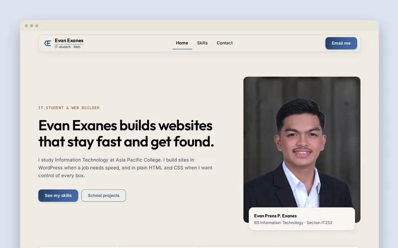
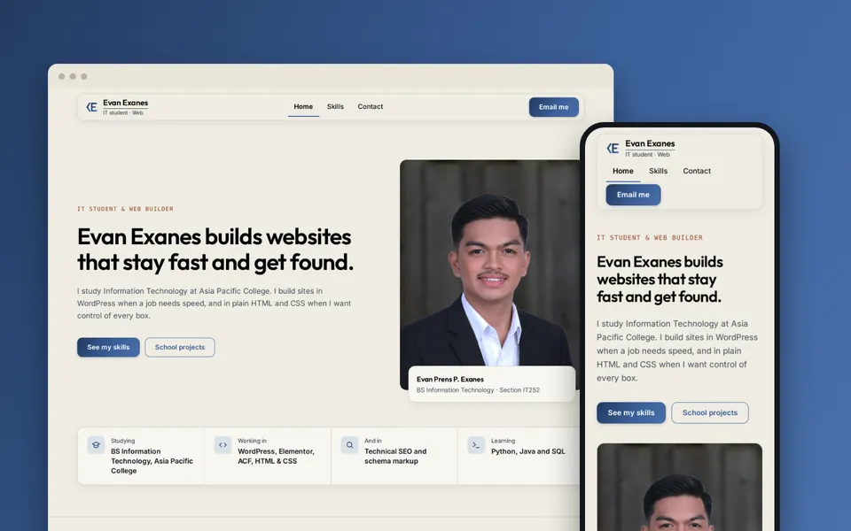
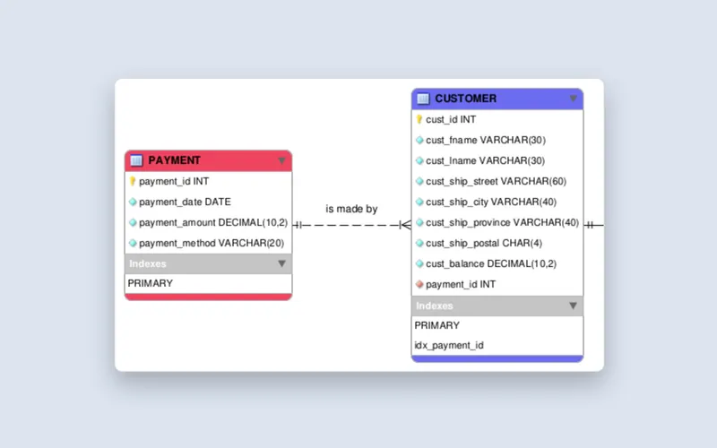
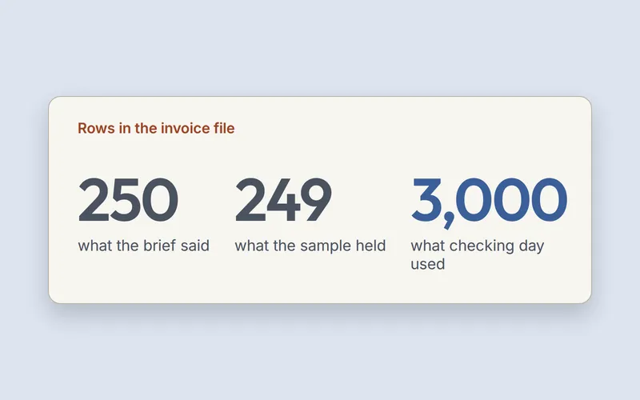
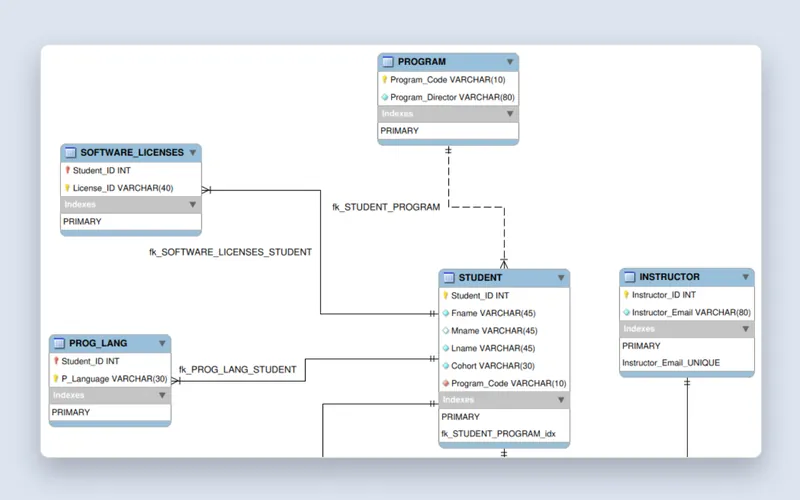
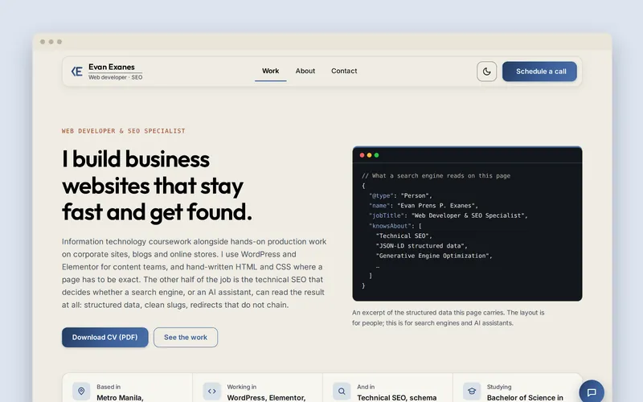

Five builds to get a profile page that looked like mine
Matching my portfolio's colours was not enough. The page only worked once I rebuilt it from the portfolio's own CSS.
2 min read
For classmates, and anyone curious what year two of BSIT looks like.
Ten 2-minute articles from my second year of BSIT. Each one starts from an assignment I handed in, and says which.
2 min read. Nothing to sign up for.

A rebuilt web page, a data model, and a bot that processes invoices.

Matching my portfolio's colours was not enough. The page only worked once I rebuilt it from the portfolio's own CSS.
2 min read

Reading four business rules the way the instructor writes them gave me a bridge table, six tables and one open question.
2 min read

The sample file had 249 rows, the brief said 250, and the real file had 3,000. I trusted none of them until I had counted.
2 min read

Five kinds of dirty data, and the one rule each of them breaks.
2 min read

Splitting multi-valued columns into rows turned three rows into eighteen. Only 4NF undid the damage.
2 min read

One blue is for fills and borders, the other can carry text. Contrast ratios decided which is which.
2 min read